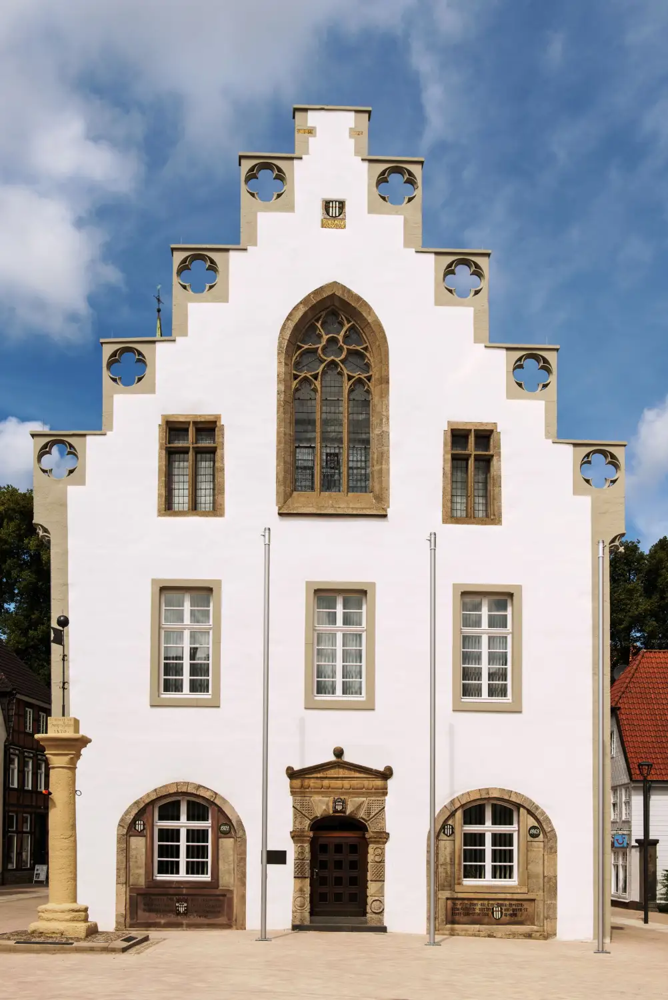

Bauen
Seestraße: Kanalarbeiten bis 12. Dezember
Der Abschnitt zwischen Kirchweg und Strandbad bleibt gesperrt. Die Umleitung führt über Kirchweg und Bahnhofstraße, die Buslinie 471 hält an der Ersatzhaltestelle „Bürgerhaus“.

Willkommen in Seeburg
4.812 Menschen, 12 Kilometer Uferweg und ein Rathaus, das für Sie da ist – vor Ort und online.
Bauen
Der Abschnitt zwischen Kirchweg und Strandbad bleibt gesperrt. Die Umleitung führt über Kirchweg und Bahnhofstraße, die Buslinie 471 hält an der Ersatzhaltestelle „Bürgerhaus“.

Kultur
32 Stände, die Chöre der Grundschule und erstmals ein Kinderkarussell auf dem Seeplatz. Der Erlös der Vereine geht an die Jugendarbeit.

Markt
Von Dezember bis Februar beginnt der Markt am Seeplatz samstags erst um 8 Uhr. Neu dabei: die Fischerei Ambach mit Renken und Saibling aus dem See.
Die Termine werden geladen …
Die häufigsten Anliegen mit zuständiger Stelle. Viele Leistungen können Sie vorab online beantragen – für persönliche Vorsprachen im Bürgerbüro empfehlen wir einen Termin.

Grußwort der Bürgermeisterin
schön, dass Sie vorbeischauen. Seeburg lebt von seinen Menschen: von über zwanzig Vereinen, von einer Feuerwehr, die rund um die Uhr bereitsteht, und von Nachbarinnen und Nachbarn, die sich kümmern.
Mit dieser Website möchten wir Ihnen den Weg ins Rathaus erleichtern. Viele Anliegen erledigen Sie inzwischen online – und wenn Sie lieber persönlich vorbeikommen, nimmt sich das Team im Bürgerbüro gerne Zeit für Sie.
Meine Bürgersprechstunde findet jeden zweiten Dienstag statt. Kommen Sie einfach vorbei.
Johanna Brandl
Erste Bürgermeisterin der Gemeinde Seeburg


Die Dateiliste wird geladen …
| Montag – Freitag | 8.00 – 12.00 Uhr |
|---|---|
| Dienstag | zusätzlich 14.00 – 18.00 Uhr |
| Donnerstag | zusätzlich 14.00 – 16.00 Uhr |
| 1. Samstag im Monat | 9.00 – 12.00 Uhr (nur Bürgerbüro) |
Das Rathaus ist barrierefrei über den Seiteneingang am Kirchweg erreichbar. Ein Behindertenparkplatz befindet sich direkt davor.
Notruf Feuerwehr und Rettungsdienst 112 · Polizei 110 · Bereitschaft Wasserversorgung 0170 1234 5678

Seeburg ist eine Gemeinde.
Seeburg liegt an einem See.
Im Rathaus arbeiten Menschen für Sie.
Dort bekommen Sie zum Beispiel einen Ausweis.
Das Rathaus ist von Montag bis Freitag offen.
Immer von 8 Uhr bis 12 Uhr.
Sie haben eine Frage?
Dann rufen Sie an: 08821 4470-0